图文实录 · 小红书 · 徐贰懂
聊聊测光模式，你应该要知道的原理
测光测的是进入镜头的反射光，并按 18% 中性灰来算曝光。矩阵、中央重点、点测的差别，是相机拿画面哪些区域来算这个平均，不是测光元件换了一种。拍人像时，顺光用矩阵，逆光把点测对准人脸，主体在中央、光线略复杂时用中央重点。
1/12
从对焦接到三种测光
封面标题是「聊聊测光模式，你应该要知道的原理」，旁边印着全文 3411 字、阅读需 11 分钟。上一期讲的是对焦模式：物理层的相位/反差检测，操作层的 AF-S/AF-C/AF-A，空间层的单点/区域/广域，再到兜底层的手动对焦。这一期讲测光。作者点名相机里常见的三个选项：矩阵测光（评价测光）、中央重点测光、点测光。要回答的三件事写在页末：测光系统到底在测什么，不同模式之间差在哪，拍人像时到底该怎么选。
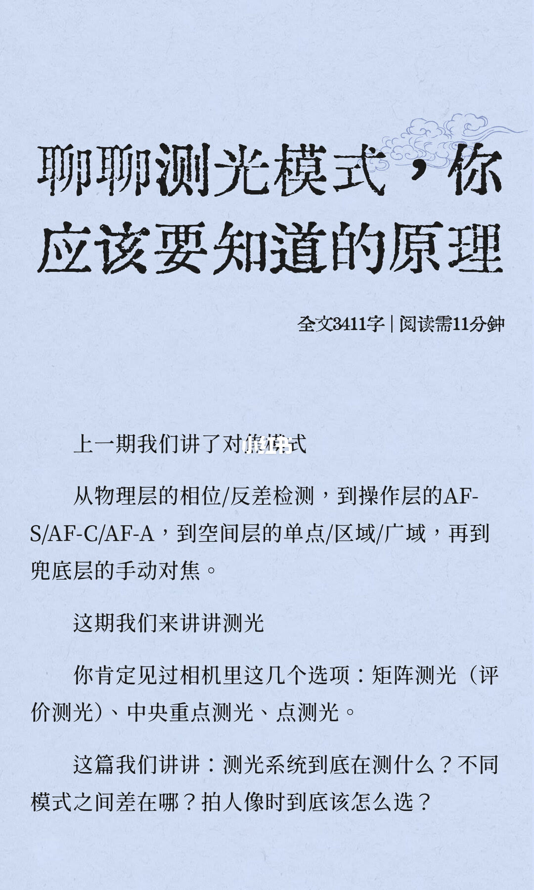
2/12
测的是反射光，基准是 18% 灰
第一节标题是「1.测光的基础：18%灰」。讲三种模式之前，先问相机的测光系统在测量什么。答案是反射光：从被摄物体表面反射回来、进入镜头的光线。测光元件（通常是硅光电二极管）把接收到的光信号转化为电信号。信号越强，反射光越多，画面越亮；信号越弱，画面越暗。关键问题写的是：相机并不知道你在拍什么。雪地反射约 90% 的入射光，白纸约 80%，一张黑卡可能只有 3%–5%。如果直接把测到的亮度当作正确曝光，雪地会被拍成灰色，黑卡也会被拍成灰色：相机主动减少曝光来压暗雪地，增加曝光来提亮黑卡。页末给出内置基准：18% 中性灰。
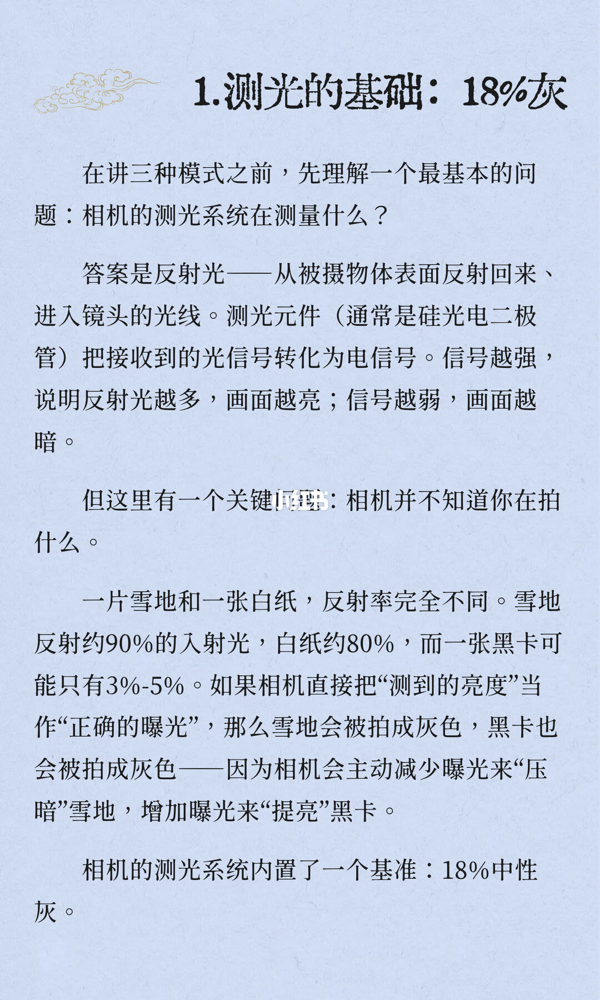
3/12
高于 18% 就减，低于 18% 就加
18% 来自对大量自然景物的统计：高反射率（高调）、中等反射率（灰调）和低反射率（低调）混合后，平均反射率大约是 18%。物理逻辑是：不管测到的是什么，都按「这个东西应该是 18% 灰」来算曝光参数。反射率高于 18%，相机就认为太亮了，减少曝光；低于 18%，就认为太暗了，增加曝光。中间三张同一场景的对比图，图注分别是测光偏暗、正确测光、测光偏亮。所以雪景拍出来发灰、逆光人像拍出来脸黑：测光系统被骗了。它不知道那是雪，只知道好亮，得压暗一点。页末一句还没写完：不同测光模式的区别，归根结底就一句话。
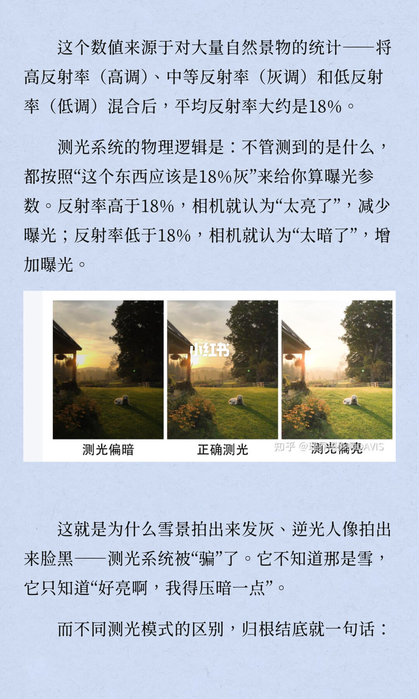
4/12
矩阵测光是全局加权平均
上页接上：相机选择画面中的哪些区域来计算这个平均反射率。第二节标题是「2.矩阵测光：全局加权平均」。矩阵测光是绝大多数相机的默认测光模式。佳能称评价测光，尼康称矩阵测光或 3D 彩色矩阵测光，索尼称多重测光。工作机制是把整个画面分割成数十甚至上百个独立的测光区域，每个区域独立测量亮度，处理器对这些数据进行加权平均计算。不同位置权重不同，通常画面中央的权重大于边缘。更高级的系统还会引入色彩识别（通过 RGB 传感器判断颜色分布）、对焦距离，甚至与相机内置的数万张照片数据库比对，用来识别雪景、夜景还是逆光人像。本质写成：让整个画面的亮度尽量均衡。它不会让任何一个区域严重过曝或欠，句子在页底断开。
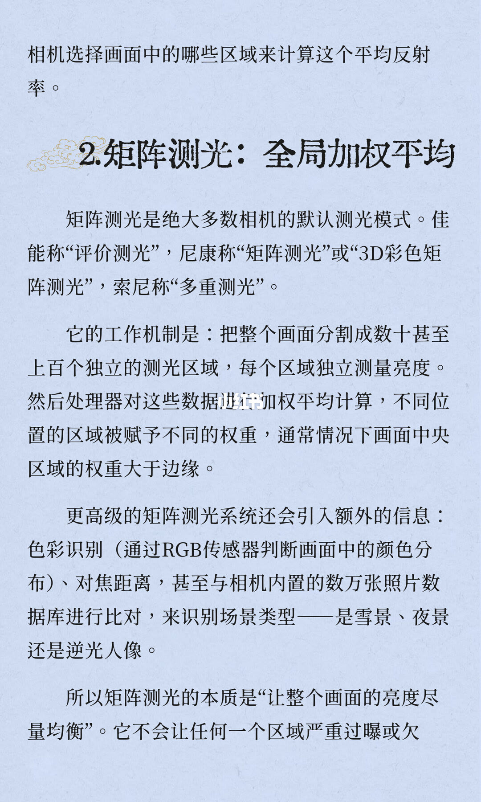
5/12
均匀光够用，大光比会被背景带偏
上页接成「欠曝」，追求的是一个整体看起来舒服的结果。光线均匀时，矩阵测光表现极好，绝大多数日常拍摄用它都足够。大光比场景，例如逆光人像或舞台聚光，矩阵测光会被背景亮度带偏，因为它太想照顾整个画面。结果是人脸欠曝、背景正常，或者背景过曝、人脸正常。适用场合写的是光线均匀、画面明暗反差不大：顺光环境、自然风光、影楼蓬拍、演播厅舞台、集体合影。配图是一座桥的风景，上面叠着分格和测光点。图下注印着「评价测光「摄」理界摄影师DAVIS」。
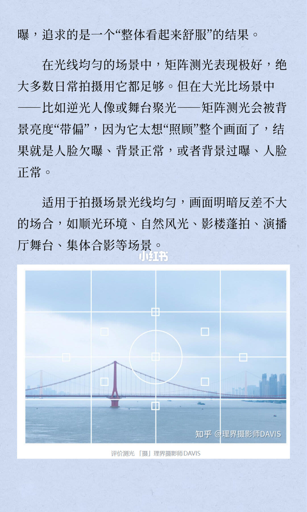
6/12
中央重点把中心权重抬得更高
第三节标题是「3.中央重点测光：中心优先的加权平均」。它比矩阵测光更古老，胶片相机时代就已经存在，物理逻辑更简单、更直接。它同样测整个画面，但给中央区域远高于边缘的权重。中央测光值记为 A，边缘记为 B，中央加权系数 α 远大于边缘加权系数 β，最终测光值是（αA+βB）除以总权重。中央区域通常约占画面的 20% 到 30%，有些机型设定为 75%。权重不是一刀切的，而是像山坡一样从中心向边缘逐渐递减。它被写成矩阵和点测之间的中间派：不像矩阵那样平均主义，也不像点测那样极端专注。默认的物理事实是，最重要的东西大概率在画面中央。所以它优先保证中央区域曝光准确，同时兼，句子在页底断开。
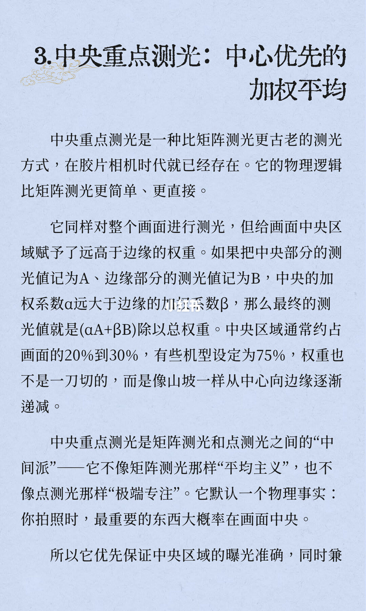
7/12
主体占大头，背景不至于死白死黑
上页接成「兼顾四周」：不至于让背景完全死白或死黑。相比矩阵测光，中央重点更聚焦于主体；相比点测光，它又保留了背景的曝光信息。可以理解成给主体和背景做一个加权平均，主体占大头，背景占小头。因为重点在画面中央，更适用于对称式构图：政商会议、追光舞台、广告宣传、产品渲染、人物肖像。配图是舞台上的两个人，中央用方框标出，框内写着中央重点测光。图角水印是知乎 @理界摄影师DAVIS。
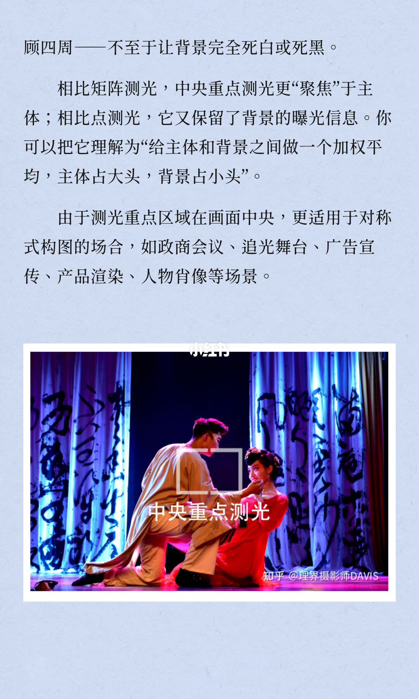
8/12
点测只读中央一小块
第四节标题是「4.点测光」。它是三种模式里测光范围最小、最极端的一种。只测量取景器中央一个极小区域的亮度，通常只占画面总面积的 1% 到 5%。具体比例因相机而异：尼康有些机型点测范围约 1.5%，有些在 1% 到 3% 之间。这个极小区域之外的亮度信息被完全忽略。相机只根据这个点的反射率决定曝光参数。测光点默认在画面正中央。如果相机支持点测联动（测光点跟随对焦点移动），测光位置可以随对焦点改变。本质是只关心要的那个点，别的全不管。精度极高，因为不受周围干扰。代价是这个点选错了，整张照片的曝光就全错了。相比矩阵兼顾全局的宽容度，点测在精度和容错之间做了极端取舍，选择了一个小范，句子在页底断开。
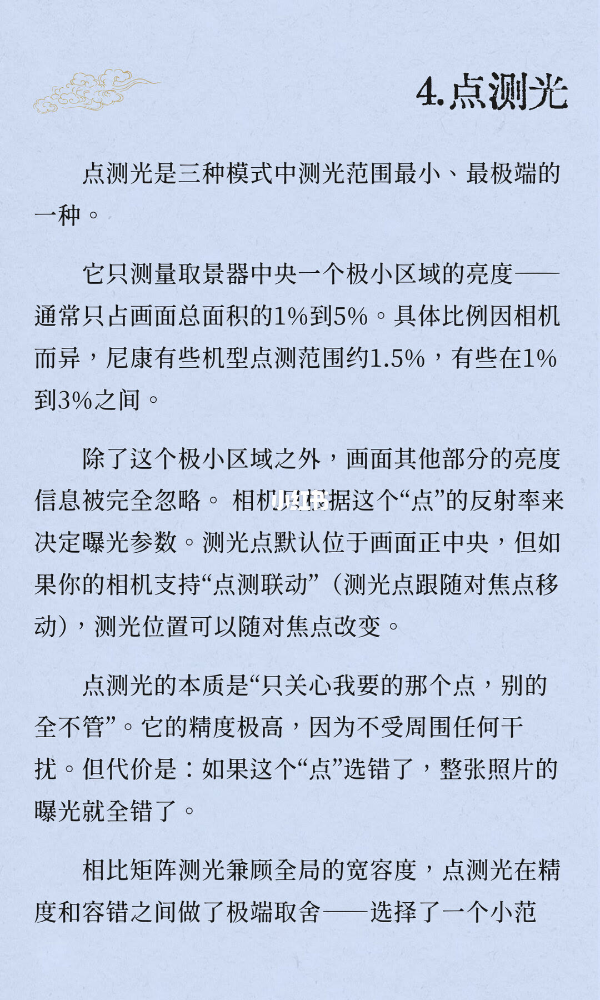
9/12
暗墙占大头时，评价测光会把主体推亮
上页接成「范围」：就要承担误判的风险。中央重点测光则刚好介于两者之间，优先主体但又不至于完全牺牲背景。同一节接着列出适合优先保证拍摄主体亮度适宜的场合：明暗对比强烈的风景、日出日落、逆光人像、剪影效果、压光技巧。这一句没有再写出模式名。配图是阴面马厩，马上有测光点标记。括号里的例子从这一页开始：阴面的马厩，马从窗内探出头来和小女孩互动，侧面的阳光正好照在马、马厩窗板和小女孩侧身上。此时如果使用评价测光，相机会把画面占比较大的黑暗墙壁算进去，为了使整个画面输出 18% 灰亮度，就会导致马和小女孩过曝。句子在「因」字断开。
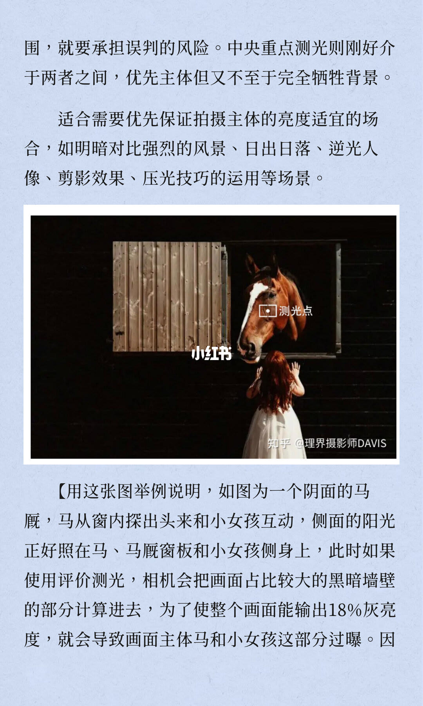
10/12
马的脸用点测，人像先分顺光和逆光
上页接成「因此」：此时应使用点测光，只对马的面部测光，让这一部分按 18% 灰的亮度输出，不考虑整个阴面墙壁暗部的影响，最终拍出这张正确曝光的照片。括号在这里结束。第五节标题是「5.拍人像时到底怎么选？」。策略分两支，页上在条件和模式之间有指向符号。顺光、光线均匀，指向矩阵测光：人脸和背景亮度差异不大，矩阵能给出整体均衡的曝光值，只需在此基础上用曝光补偿微调即可。逆光、背景极亮，指向点测光对准人脸：背景比人脸亮好几档。如果使用矩阵测光，背景强光会拉高平均值，导致人脸欠曝。应该把测光点对准人脸，相机忽略背景有多亮，只保证人脸曝光准，句子在页底断开。
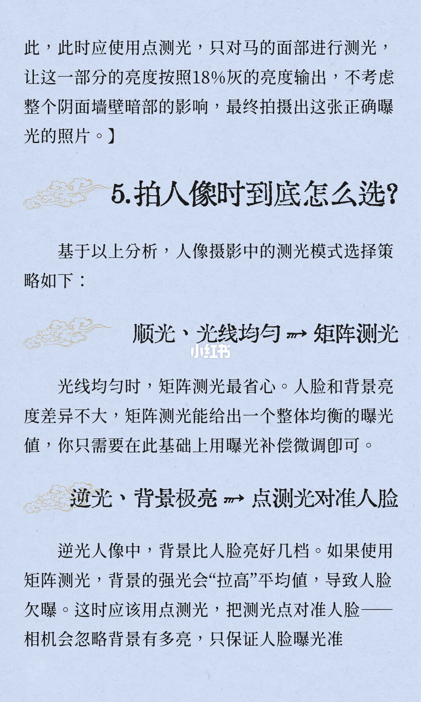
11/12
主体在中央用中央重点，并检查点测联动
上页接成「准确」。第三支：主体在中央、光线略复杂，指向中央重点测光。拍半身人像、主体大致在画面中央时，中央重点是折中：比矩阵更关注主体，又不像点测那么极端，在主体曝光准确和背景细节保留之间取了中间值。然后单列「关于点测联动」。如果用单点对焦配合点测光，要检查相机是否支持点测联动，即测光点跟随对焦点移动。如果不支持，点测光永远只测画面正中央，需要先测光、再构图：半按快门锁定曝光后，移动相机重新构图。
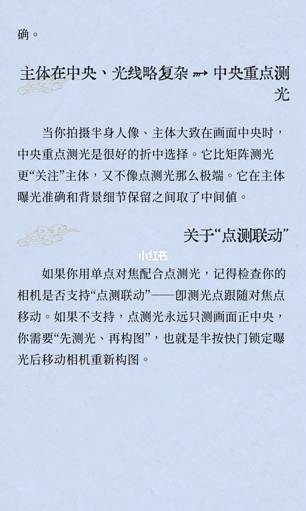
12/12
没有绝对好坏，注意力放在你在意的地方
上半是四格测光范围示意，标签依次是评价测光、局部测光、点测光、中央重点测光。评价测光铺满整幅分格；局部测光是中央一块较大的圆形；点测光是正中极小的一点，四周有箭头；中央重点测光是中央一块向周围变淡的区域。图角水印是知乎 @理界摄影师DAVIS。正文只有「写在最后」两句：测光模式没有绝对的好坏。正确的测光模式，是让你的相机把注意力放在你最在意的地方。局部测光出现在这张图上，前面十一页没有再解释它的面积或用法。
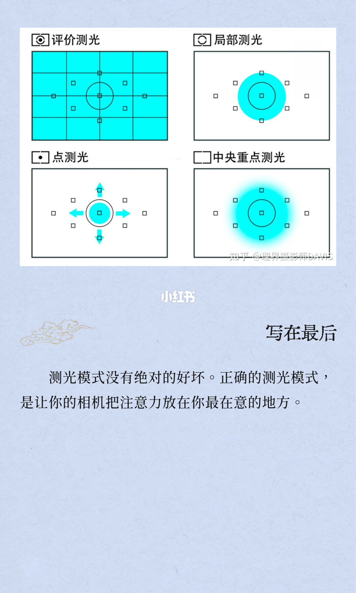
收尾
先选区域，再让那一块去对齐 18% 灰
结论：测光系统测反射光，并按 18% 灰重算曝光。模式之间的差别是参与平均的区域：矩阵照顾整幅，中央重点让中央占大头，点测只认那 1% 到 5%。顺光人像用矩阵，逆光把点测放在脸上，主体在中央且光线略复杂时用中央重点。
支撑页：第 2–3 页定义反射光、18% 灰，以及高于就减、低于就加。第 4–5 页是矩阵的分区加权和均匀光适用、大光比被带偏。第 6–7 页是中央重点的加权和对称构图。第 8–10 页是点测面积、马厩暗墙，以及人像的顺光/逆光选择。第 11 页补中央重点折中和点测联动。第 12 页把选择收成「注意力放在你最在意的地方」。
边界：反射率只采用雪地约 90%、白纸约 80%、黑卡 3%–5%，以及平均大约 18%。点测面积只采用 1% 到 5%、尼康有些约 1.5%、有些 1% 到 3%。中央区域只采用通常 20% 到 30%、有些机型 75%。α、β 没有数字，公式停在（αA+βB）除以总权重。曝光补偿没有档位，逆光只写亮好几档。第 5 页「影楼蓬拍」按图面书写。第 12 页的局部测光没有正文，不能补成第四套操作。图上没有菜单路径。